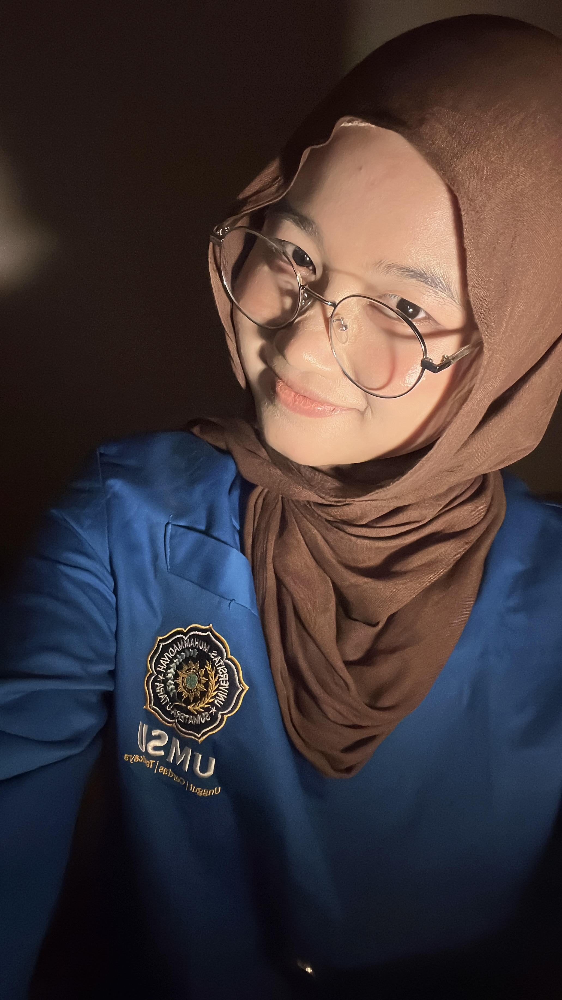

Hi! I am Naila Salsabila, Born and raised in Medan on September 1st, 2006. I am currently a driven 4th semester Information System student at Universitas Muhammadiyah Sumatera Utara (UMSU). My journey in technology is fueled by a deep-rooted passion for digital innovation and a mission to explore how software can solve real-world challenges in meaningful ways.
I specialize in Web Development and Software Engineering, with a strong technical foundation in JavaScript, Python, and SQL. Beyond just writing code, I am highly focused on System Analysis and UI/UX Design to ensure that every application I build is both structurally robust and user-centric. I am a lifelong learner who thrives on collaboration and is always excited to contribute to innovative projects that push the boundaries of technology!
| Time | Activity |
|---|---|
| 05:10 - 05:30 | Wake up & Subuh Prayer |
| 05:30 - 06:00 | Morning Walk (Cardio) |
| 06:00 - 06:20 | Prepare & Eat Breakfast |
| 06:20 - 06:50 | Shower & Prepare for University |
| 06:50 - 07:20 | Commute to Campus (~25 mins) |
| 07:30 - 12:00 | University Classes & Activities |
| 12:10 - 12:40 | Commute Home |
| 12:40 - 13:00 | Shower & Freshen Up |
| 13:00 - 13:10 | Zuhr Prayer |
| 13:10 - 14:00 | Cook & Eat Lunch (Watching Windah Basudara) |
| 14:00 - 14:30 | Manage Online Store |
| 14:30 - 15:00 | Video Editing |
| 15:00 - 15:30 | Afternoon Nap |
| 15:30 - 15:50 | Wake up & Asr Prayer |
| 16:00 - 17:00 | Coding Study Session |
| 17:00 - 17:50 | Cardio & Pilates |
| 17:50 - 18:10 | Protein & Fruit Snack |
| 18:10 - 18:35 | Shower & Freshen Up |
| 18:35 - 19:15 | Maghrib Prayer & Quran Recitation (1W1J) |
| 19:15 - 19:40 | Cook & Eat Dinner |
| 19:40 - 20:05 | Isha Prayer & Quran Recitation (1W1J) |
| 20:05 - 20:30 | House Chores & Cleaning |
| 20:30 - 21:00 | Night Routine & Skincare |
| 21:00 - 21:30 | Short Study & Prepare for Tomorrow's Classes |
| 21:30 - 21:55 | Prepare for Bed & Light Scrolling |
| 22:00 - 05:00 | Sleep |
Business Owner & Entrepreneur @naiiouchi.id (2025 - Present)
Let's connect on social media!